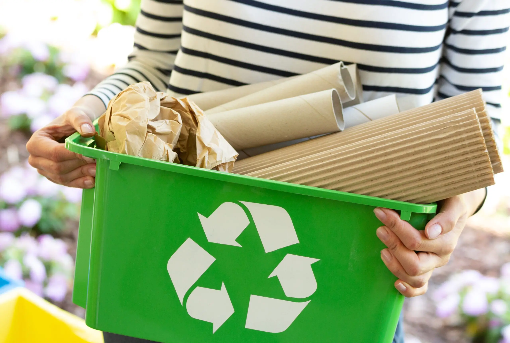

In today's rapidly evolving digital landscape, the quest for a sustainable future has found a
new ally in the form of our recycling website. This online platform allows us to use powerful tools,
connecting environmentally conscious individuals, businesses, and communities to the world of recycling.
By seamlessly merging technology and environmental responsibility, we at GreenCycle Soutions are playing a
pivotal role in reshaping the way we approach waste management and conservation. Welcome to our innovativew
ebsite designed to revolutionize your recycling experience. Say goodbye to the hassle of searching for nearby
recycling facilities. Our platform's advanced geolocation technology ensures
you can effortlessly pinpoint the nearest centers tailored to your specific recycling needs. Whether it's
paper, plastic, electronics, or more, we've got you covered. Discover the closest recycling
facility effortlessly with our website. Seamlessly locate recycling center near you,promoting eco-friendly habits
and reducing waste. Our user-friendly interface makes recycling convenient and helps protect the environment.
Join us in making a greener world by finding your nearest recycling solution today.
In today's rapidly evolving digital landscape, the quest for a sustainable future has found a
new ally in the form of our recycling website. This online platform allows us to use powerful tools,
connecting environmentally conscious individuals, businesses, and communities to the world of recycling.
By seamlessly merging technology and environmental responsibility, we at GreenCycle Soutions are playing a
pivotal role in reshaping the way we approach waste management and conservation. Welcome to our innovativew
ebsite designed to revolutionize your recycling experience. Say goodbye to the hassle of searching for nearby
recycling facilities. Our platform's advanced geolocation technology ensures
you can effortlessly pinpoint the nearest centers tailored to your specific recycling needs. Whether it's
paper, plastic, electronics, or more, we've got you covered. Discover the closest recycling
facility effortlessly with our website. Seamlessly locate recycling center near you,promoting eco-friendly habits
and reducing waste. Our user-friendly interface makes recycling convenient and helps protect the environment.
Join us in making a greener world by finding your nearest recycling solution today.

At the heart of a recycling website lies its ability to educate and empower.We believe in the power of collective
environmental action. By connecting individuals with nearby recycling
resources, we aim to amplify the impact of recycling and contribute to a sustainable future. Not only does
our platform encourage responsible waste disposal, but it also educates users about the importance of
recycling in conserving valuable resources and reducing carbon footprint. Our platform serves as a virtual hub,
offering a wealth of information on recycling processes, different materials, and the importance of reducing our ecological
footprint. Users can explore comprehensive guides on sorting recyclables, learn about the lifecycle of materials, and
gain insights into the larger impact of recycling on our planet. This educational aspect fosters a culture of informed
decision-making, equipping individuals with the knowledge they need to make environmentally responsible choices.
 The convenience factor of recycling websites cannot be overstated. In a world where time is of the essence,
these platforms streamline the recycling process. Users can easily locate nearby recycling centers, learn about
pickup schedules, and even receive notifications for collection events in their communities. Such accessibility
encourages increased participation, as recycling becomes a seamless part of daily life. Join us on a journey towards
a cleaner planet. Embrace the ease of our intuitive interface, where a few clicks can lead to a significant positive
change. Together, let's foster a community committed to recycling, making a tangible difference one recycled item at
a time. Be a part of the solution, start using our website today and be proud of your contribution to a greener tomorrow
The convenience factor of recycling websites cannot be overstated. In a world where time is of the essence,
these platforms streamline the recycling process. Users can easily locate nearby recycling centers, learn about
pickup schedules, and even receive notifications for collection events in their communities. Such accessibility
encourages increased participation, as recycling becomes a seamless part of daily life. Join us on a journey towards
a cleaner planet. Embrace the ease of our intuitive interface, where a few clicks can lead to a significant positive
change. Together, let's foster a community committed to recycling, making a tangible difference one recycled item at
a time. Be a part of the solution, start using our website today and be proud of your contribution to a greener tomorrow